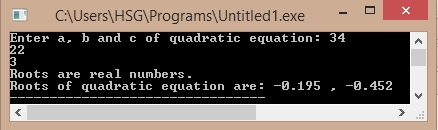

/*C Program calculate roots of a quadratic equation*/
#include<stdio.h>
#include<math.h>
int main(){
float a,b,c;
float d,root1,root2;
printf("Enter a, b and c of quadratic equation: ");
scanf("%f%f%f",&a,&b,&c);
d = b * b - 4 * a * c;
if(d < 0){
printf("Roots are complex number.\n");
printf("Roots of quadratic equation are: ");
printf("%.3f%+.3fi",-b/(2*a),sqrt(-d)/(2*a));
printf(", %.3f%+.3fi",-b/(2*a),-sqrt(-d)/(2*a));
return 0;
}
else if(d==0){
printf("Both roots are equal.\n");
root1 = -b /(2* a);
printf("Root of quadratic equation is: %.3f ",root1);
return 0;
}
else{
printf("Roots are real numbers.\n");
root1 = ( -b + sqrt(d)) / (2* a);
root2 = ( -b - sqrt(d)) / (2* a);
printf("Roots of quadratic equation are: %.3f , %.3f",root1,root2);
}
return 0;
}
Output:
